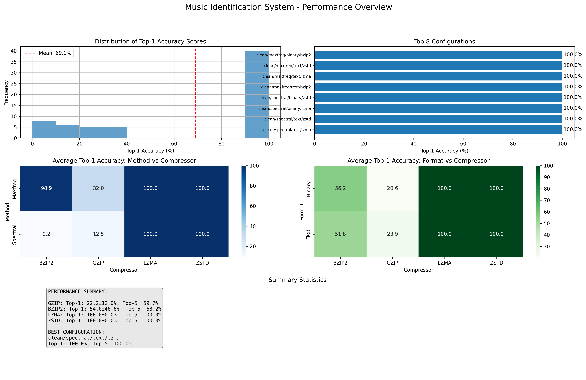
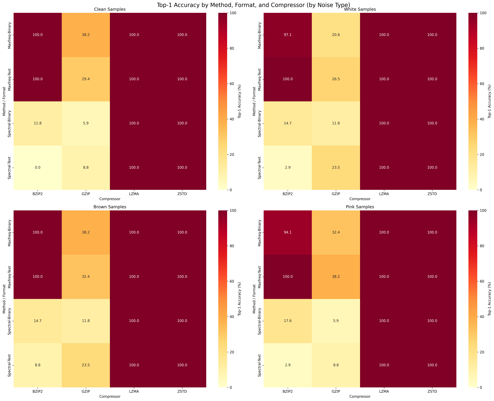
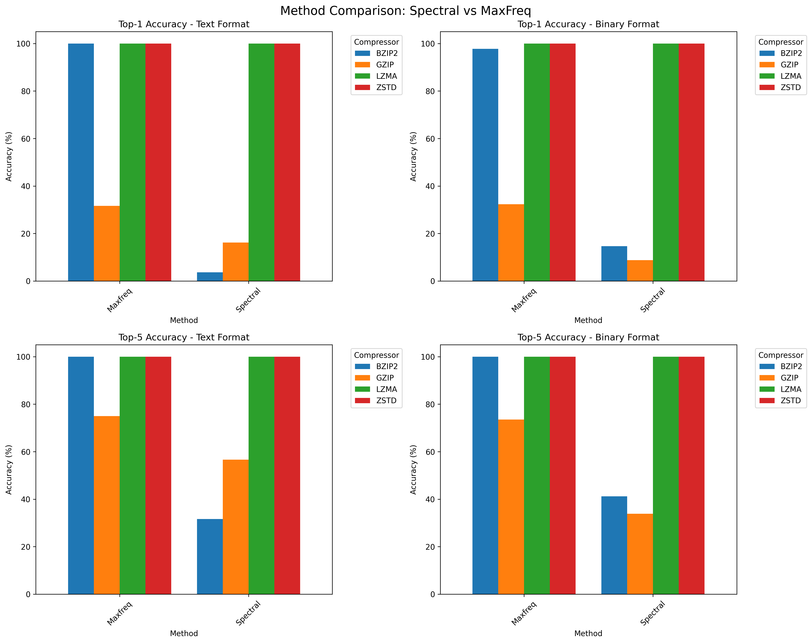
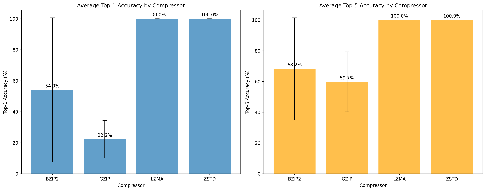
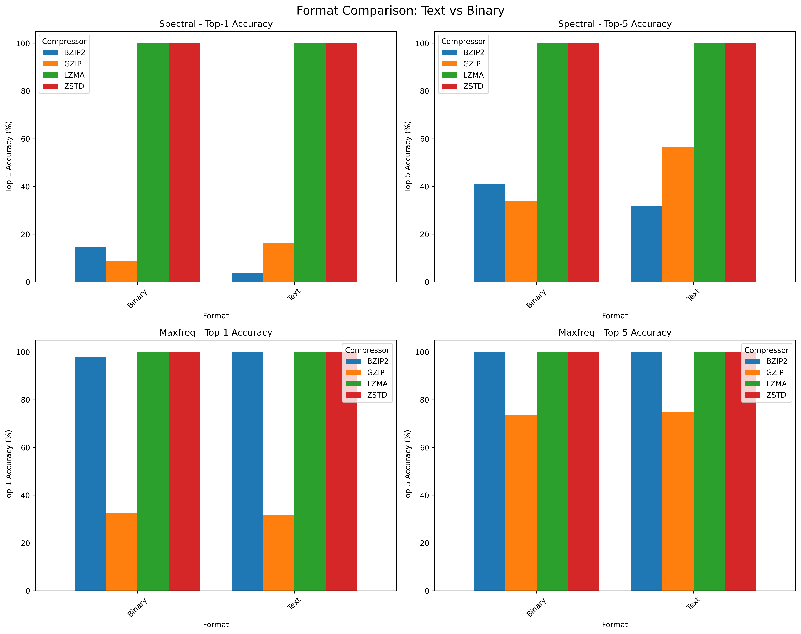
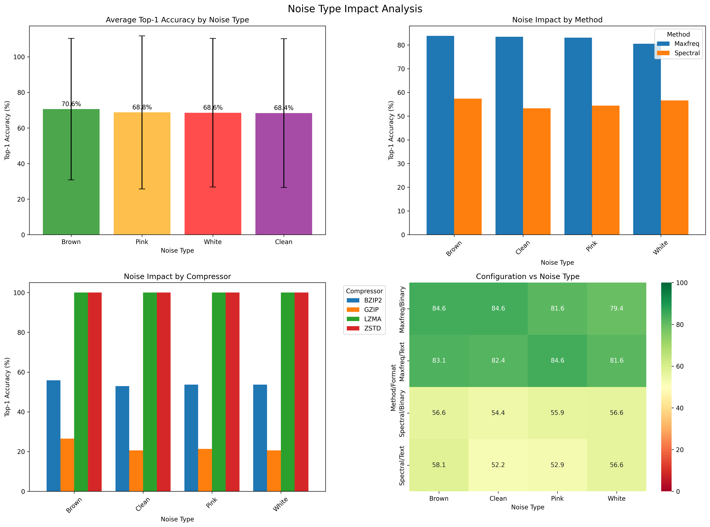

Music Identification System - Test Results
Generated on Tue Jun 10 05:02:19 PM WEST 2025
Dataset: samples
Methods tested: spectral maxfreq
Formats tested: text binary
Compressors tested: gzip bzip2 lzma zstd
Methods tested: spectral maxfreq
Formats tested: text binary
Compressors tested: gzip bzip2 lzma zstd
🎯 Accuracy Analysis
These plots show the performance of different parameter combinations in terms of music identification accuracy.

Performance Overview
Comprehensive dashboard showing all key metrics and best configurations.

Accuracy Heatmap
Top-1 accuracy across all method/format/compressor combinations.

Method Comparison
Spectral vs MaxFreq method performance comparison.

Compressor Ranking
Average performance ranking of compression algorithms.

Format Comparison
Text vs Binary format performance analysis.

Noise Impact Analysis
Analysis of how different noise types affect identification accuracy.
💾 Storage Analysis
These plots analyze the storage requirements and efficiency of different feature extraction methods.

Feature File Sizes
Storage size comparison between methods and formats.

Storage Efficiency
Compression ratios and storage efficiency analysis.
📊 Key Insights
Use these visualizations to:
- Identify the best performing method/format/compressor combination
- Understand trade-offs between accuracy and storage requirements
- Compare different feature extraction approaches
- Make informed decisions for production deployment